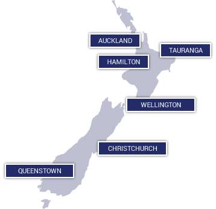

We in social media:



Feel inspired by Queenstown’s stunning scenery, huge range of activities and renowned warm welcome. Surrounded by majestic mountains and set on the shores of crystal clear Lake Wakatipu, the natural beauty and the unique energy of the region create the perfect backdrop for a holiday full of adventure, discovery and rejuvenation. You’ll find everything you need to plan your next trip to Queenstown, from accommodation options to the endless array of activities and attractions, as well as a full calendar of events for the year.
Queenstown (Māori: Tāhuna) is a resort town in Otago in the south-west of New Zealand's South Island. It has an urban population of 14,300 (June 2016), making it the 27th largest urban area in New Zealand. In 2016, Queenstown overtook Oamaru to become the second largest urban area in Otago, behind Dunedin.
The town is built around an inlet called Queenstown Bay on Lake Wakatipu, a long thin Z-shaped lake formed by glacial processes, and has spectacular views of nearby mountains such as The Remarkables, Cecil Peak, Walter Peak and just above the town; Ben Lomond and Queenstown Hill.
The Queenstown-Lakes District has a land area of 8,704.97 square kilometres (3,361.01 sq mi) not counting its inland lakes (Lake Hāwea, Lake Wakatipu, and Lake Wanaka). The region has an estimated resident population of 34,700 (June 2016). Its neighbouring towns include Arrowtown, Glenorchy, Kingston, Wanaka, Alexandra, and Cromwell. The nearest cities are Dunedin and Invercargill. Queenstown is known for its commerce-oriented tourism, especially adventure and ski tourism.